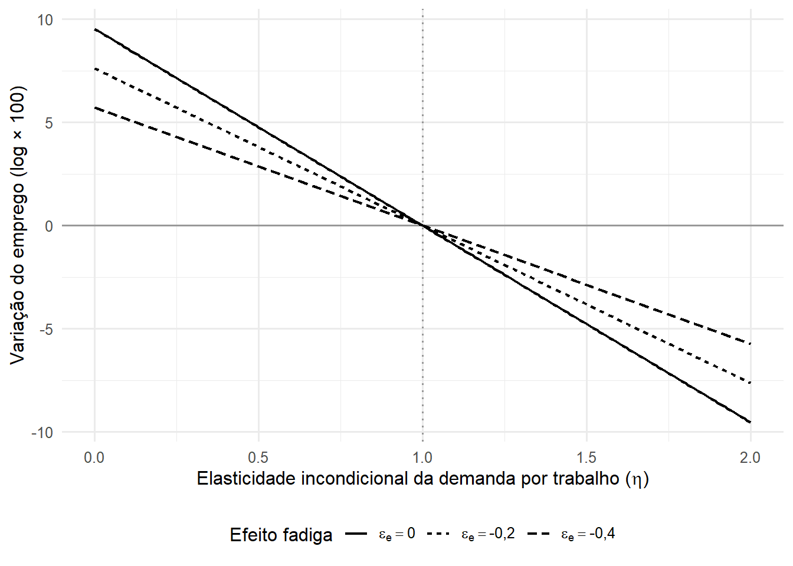

| η | Δ emprego (N) | Δ horas totais (NH) | Δ custo por unidade efetiva |
|---|---|---|---|
| 0.5 | 3.8 | -5.7 | 7.6 |
| 1.0 | 0.0 | -9.5 | 7.6 |
| 1.5 | -3.8 | -13.3 | 7.6 |
1 Motivação
No dia 14 de outubro de 2026, o Senado aprovou uma proposta de emenda à Constituição que acaba com a escala 6x1 e reduz gradualmente a jornada máxima de 44 para 40 horas semanais, sem redução de salário.
Venho acompanhando as discussões sobre o tema nos últimos meses e fui convidado a comentar a medida, o que me levou a organizar algumas reflexões. Como professor de Microeconomia Aplicada, fiquei pensando em como abordar esse assunto a partir de um modelo de demanda por trabalho, desses que ensinamos aos alunos nos cursos de graduação e pós-graduação em Economia.
Bom, adaptar um modelo básico e manter a explicação compreensível se mostrou um desafio e tanto. Precisei retomar algumas leituras, buscar outros artigos e, confesso, contei com a ajuda de um agente de IA para trabalhar algumas formulações.
A pergunta de partida foi a seguinte: o fim da escala 6x1 e a redução da jornada de trabalho geram ou destroem empregos? Uma das coisas que mais me interessam na teoria microeconômica é justamente a possibilidade de transformar uma pergunta como essa em um problema que podemos examinar com mais cuidado. Ao desenvolver o modelo, fui percebendo como a resposta depende das hipóteses adotadas: do uso de horas extras, da elasticidade da demanda por trabalho, dos custos fixos por trabalhador e da necessidade de manter equipes nos dias de funcionamento.
Organizei este texto para compartilhar o raciocínio e as reflexões que surgiram pelo caminho — e também para atualizar este blog, que anda parado há algum tempo. Como todo modelo, este é uma simplificação e deixa de fora aspectos importantes da discussão. Ainda assim, espero que ajude a entender alguns dos mecanismos envolvidos e seja útil para quem está aprendendo ou simplesmente gosta de microeconomia.
2 Da escala à jornada: o que está mudando?
A política atinge dois grupos de trabalhadores de forma diferente:
- quem já trabalha em 5x2 com 44 horas sofre apenas um choque de horas (de 44 para 40);
- quem trabalha em 6x1 sofre o choque de horas e, adicionalmente, perde um dia de trabalho (de 6 para 5).
Com 40 horas em 5 dias, a jornada diária passa a ser de exatamente 8 horas, que é o teto diário constitucional.
Há ainda um detalhe institucional decisivo. O salário mensal é convertido em salário-hora pelo divisor de 220 horas quando a jornada é de 44 horas semanais, e de 200 horas quando a jornada é de 40. Como o salário mensal é irredutível, o salário-hora sobe 10%, e a hora extra, calculada sobre ele, sobe na mesma proporção.
A jornada diminui em 4 horas sobre as 44 iniciais, uma redução de aproximadamente 9,1%. Já o salário-hora aumenta na razão entre a jornada antiga e a nova: \(44/40 = 1{,}10\). A empresa continua pagando o mesmo salário por trabalhador, mas passa a receber menos horas em contrapartida.
Ideia central
Com o salário mensal fixo, reduzir a jornada de 44 para 40 horas semanais equivale a um aumento de 10% no custo da hora contratada. A questão relevante é como as firmas reagem a esse aumento de custo.
3 O modelo microeconômico
O modelo tem três blocos:
- um núcleo de demanda por trabalhadores e horas, válido para todas as firmas;
- um módulo de cobertura, para setores com funcionamento fixo (que possuem a necessidade de manter uma equipe mínima em cada dia de funcionamento, como ocorre em supermercados, restaurantes e outros serviços), onde o 6x1 se concentra; e
- um bloco de oferta e bem-estar dos trabalhadores.
A estrutura do núcleo segue Calmfors e Hoel (1988), adaptada à rigidez salarial brasileira.
A aba abaixo mostra um pouco da notação utilizada no texto.
Notação
| Símbolo | Significado |
|---|---|
| \(N\) | número de trabalhadores |
| \(H\), \(\bar H\) | horas trabalhadas e jornada legal (semanais) |
| \(W\), \(w\) | salário semanal base e salário-hora (\(w = W/\bar H\)) |
| \(f\) | custo fixo por trabalhador |
| \(\phi\) | prêmio de hora extra (0,5) |
| \(e(H)\), \(\varepsilon_e\) | eficiência por hora e sua elasticidade |
| \(L\), \(c_L\) | trabalho efetivo e seu custo unitário |
| \(\eta\) | elasticidade incondicional da demanda por \(L\) |
| \(s\), \(\sigma\), \(\varepsilon_D\) | participação do trabalho no custo, elasticidade de substituição, elasticidade da demanda pelo produto |
| \(D\), \(d\), \(\bar n\) | dias de funcionamento, dias por trabalhador, equipe mínima diária |
| \(\kappa\) | custo por dia trabalhado |
3.1 Caracterizando a tecnologia das firmas
Vamos começar com uma função de produção que representa a tecnologia das firmas:
\[ Y = F(K, L), \]
em que \(Y\) representa a quantidade produzida, \(K\) é o capital utilizado e \(L\) corresponde ao trabalho efetivo empregado na produção.
Por sua vez, o trabalho efetivo é definido como:
\[ L = N \cdot H \cdot e(H), \]
em que \(N\) é o número de trabalhadores, \(H\) são as horas semanais trabalhadas por cada um e \(e(H)\) é uma medida de eficiência por hora. Vamos supor que essa eficiência seja positiva e não crescente com as horas trabalhadas, para representar a possibilidade de fadiga em jornadas longas (Pencavel, 2015).
É importante distinguir três medidas: o número de pessoas empregadas, \(N\); o total de horas trabalhadas, \(N \cdot H\); e o trabalho efetivo, \(L\), que também considera a eficiência dessas horas. Duas equipes podem trabalhar o mesmo número de horas e entregar quantidades diferentes de trabalho efetivo.
Para medir como a eficiência por hora responde à duração da jornada, definimos sua elasticidade em relação às horas:
\[ \varepsilon_e = \frac{d \ln e(H)}{d \ln H}. \]
Adotamos a hipótese de que: \(-1 < \varepsilon_e \le 0\). O limite superior permite que a eficiência por hora diminua ou permaneça constante quando a jornada aumenta. O limite inferior significa que essa queda de eficiência, quando ocorre, é proporcionalmente menor que o aumento das horas. Assim, uma jornada mais longa ainda acrescenta trabalho efetivo por empregado, embora o ganho seja atenuado pela fadiga.
Por exemplo, se \(\varepsilon_e = -0{,}2\), um aumento de 1% nas horas trabalhadas reduz a eficiência por hora em aproximadamente 0,2%. O trabalho efetivo por empregado aumenta, portanto, cerca de 0,8%.
3.2 Caracterizando os custos
Seja \(\bar H\) a jornada normal semanal, \(W\) o salário-base semanal e \(f\) o custo fixo por trabalhador, expresso em valor equivalente por semana. Esse último componente inclui custos de contratação e treinamento, distribuídos ao longo do vínculo, além de benefícios e outros gastos que não variam com as horas trabalhadas.
O salário-hora correspondente à jornada normal é definido por:
\[ w = \frac{W}{\bar H}. \]
Para a contabilidade de horas extras, adotamos um adicional em que \(\phi\) é o prêmio de hora extra (\(\phi = 0{,}5\) no Brasil).
O custo total é
\[ C = N\left[ W + f + w(1+\phi)\,(H - \bar H)^{+} \right] + rK, \]
em que \(r\) representa o custo semanal por unidade de capital.
O termo \((H - \bar H)^{+}\) corresponde às horas extras por trabalhador: é igual ao excesso de horas sobre a jornada normal, quando ele existe, e zero caso contrário. A notação utilizada corresponde a uma função do tipo \((x)^{+} = \max(x, 0)\).
No cenário analisado, a jornada normal \(\bar H\) diminui de 44 para 40 horas, mantendo o salário-base \(W\) constante. O salário-hora aumenta, portanto, na razão \(44/40 = 1{,}10\), ou seja, 10%. Como o adicional \(\phi\) permanece constante, o valor de cada hora extra também aumenta 10%.
3.3 O problema da firma
Vamos supor que a firma escolha o número de trabalhadores, \(N\), as horas semanais por trabalhador, \(H\), e a quantidade de capital, \(K\), para maximizar o lucro.
Seja \(p\) o preço do produto, que a firma toma como dado. O lucro corresponde à receita obtida com a produção, descontados os custos com trabalhadores e capital. Assim, o problema de otimização é:
\[ \max_{N,\,H,\,K} \; \pi = p \cdot F\!\left( K, N H e(H) \right) - N \left[ W + f + w(1+\phi)\,(H - \bar H)^{+} \right] - rK. \]
A firma pode ampliar o trabalho efetivo contratando mais pessoas ou aumentando as horas de cada empregado. Essas alternativas têm custos diferentes, especialmente quando a jornada ultrapassa o limite normal e exige o pagamento de horas extras.
Para analisar a resposta à redução da jornada normal, vamos distinguir dois regimes: firmas que não utilizam horas extras e firmas que utilizam.
3.4 Regime 1: firmas sem hora extra
Pense numa loja com 10 empregados com jornadas de 44 horas: são 440 horas por semana. Com jornadas de 40 horas, os mesmos 10 entregam 400 horas semanais. Para manter as 440 horas, a loja precisaria de 11 empregados, e a folha subiria 10%. Esse cálculo mantém constante o total de horas e supõe que a produtividade por hora não muda.
Será que a loja vai contratar o 11º empregado? Isso depende de como ela responde ao aumento do custo por hora. A loja pode reorganizar a produção, substituir parte do trabalho por máquinas ou reduzir o volume produzido. A elasticidade \(\eta\), definida adiante, mede quanto a quantidade demandada de trabalho efetivo muda em resposta à alteração de seu custo.
Neste primeiro regime, a firma utiliza toda a jornada normal, sem recorrer a horas extras. Assim, \(H = \bar H\).
Vamos analisar o que acontece quando a jornada normal diminui de 44 para 40 horas, supondo que a firma continue sem utilizar horas extras após a mudança. Nesse caso, cada empregado trabalha menos horas, mas seu salário-base permanece constante.
Sem horas extras, cada trabalhador custa \(W+f\) e fornece \(\bar H\,e(\bar H)\) unidades de trabalho efetivo. Dividindo o custo pela quantidade fornecida, obtemos o custo por unidade de trabalho efetivo, que denominamos \(c_L\). Assim, o gasto total com trabalhadores pode ser escrito como \(N(W+f)=c_LL\).
Com \(H = \bar H\), o lucro da firma pode ser escrito em termos do trabalho efetivo \(L = N\,\bar H\, e(\bar H)\):
\[ \pi = p\,F(K, L) - c_L\,L - rK, \qquad c_L = \frac{W + f}{e(\bar H)\,\bar H}. \]
Voltamos, assim, ao problema de escolha de capital e trabalho, com custo unitário do trabalho efetivo igual a \(c_L\). Em uma solução interior, as condições de primeira ordem são \(pF_L=c_L\) e \(pF_K=r\): a firma iguala o valor do produto marginal de cada fator ao seu custo unitário. Nesse regime, a redução da jornada altera \(c_L\), pois o custo por trabalhador, \(W+f\), permanece constante, enquanto o trabalho efetivo fornecido por cada empregado diminui.
Como \(H=\bar H\) neste regime, vamos escrever simplesmente \(H\) nas expressões seguintes. Para examinar como a redução da jornada altera o custo do trabalho efetivo, usaremos diferenciais logarítmicos, que representam pequenas variações proporcionais.
Para obter a variação de \(c_L\), tomamos o logaritmo da sua expressão:
\[ \ln c_L = \ln(W + f) - \ln e(H) - \ln H. \]
Como \(W + f\) não muda com a política, o primeiro termo é constante. Diferenciando e usando a definição de \(\varepsilon_e\), temos \(d\ln e = \varepsilon_e\, d\ln H\), de modo que
\[ d \ln c_L = -\varepsilon_e\, d\ln H - d\ln H = -(1 + \varepsilon_e)\, d \ln H. \]
Como \(d \ln H < 0\) e \(1 + \varepsilon_e > 0\), o custo do trabalho efetivo sobe.
Para saber como a firma reage a esse aumento de custo, precisamos definir a elasticidade-preço incondicional da demanda por trabalho efetivo. Ela incorpora tanto a substituição de trabalho por capital quanto a mudança no volume produzido. Representamos essa elasticidade em valor absoluto por \(\eta>0\):
\[ \eta = - \frac{d \ln L}{d \ln c_L} \]
Por exemplo, se \(\eta = 0{,}5\), um aumento de 1% no custo do trabalho efetivo reduz sua quantidade demandada em aproximadamente 0,5%. Se \(\eta = 1{,}5\), a redução é de aproximadamente 1,5%. Uma demanda mais elástica significa, portanto, que a empresa ajusta mais intensamente a quantidade utilizada diante de uma mudança de custo. O termo “incondicional” indica que a produção também pode se ajustar, em vez de permanecer fixa.
Pela definição de \(\eta\), podemos relacionar a mudança no custo à resposta da quantidade demandada de trabalho efetivo:
\[ d \ln L = -\eta \, d \ln c_L = \eta\,(1 + \varepsilon_e)\, d \ln H. \]
Para chegar ao emprego, usamos a definição \(L = N\, H\,e(H)\). Tomando logaritmos e diferenciando, \(d\ln L = d\ln N + (1 + \varepsilon_e)\, d\ln H\), ou seja,
\[ d \ln N = d \ln L - (1 + \varepsilon_e)\, d \ln H. \]
Substituindo a expressão de \(d\ln L\):
\[ d \ln N = \eta\,(1 + \varepsilon_e)\, d \ln H - (1 + \varepsilon_e)\, d \ln H = (1 + \varepsilon_e)\, d \ln H\,(\eta - 1). \]
Como a jornada cai, \(d\ln H < 0\), podemos escrever \(d\ln H = -\lvert d\ln H \rvert\). Isso inverte o sinal do último fator e leva à forma final:
\[ \boxed{\; d \ln N = (1 + \varepsilon_e)\,\lvert d \ln H \rvert\,(1 - \eta) \;} \]
A fórmula reúne dois movimentos. Por um lado, cada empregado passa a fornecer menos trabalho efetivo, o que exige mais pessoas para manter a mesma quantidade total. Por outro, o aumento do custo leva a empresa a reduzir a quantidade de trabalho efetivo que deseja utilizar.
O resultado depende da intensidade dessa resposta. Se um aumento de 1% no custo reduz a quantidade demandada de trabalho efetivo em menos de 1%, dizemos que a demanda é inelástica (\(\eta < 1\)). Nesse caso, a redução da quantidade demandada é relativamente pequena, e a necessidade de distribuir o trabalho entre mais pessoas predomina: o emprego aumenta.
Se o mesmo aumento de 1% no custo reduz a quantidade demandada em mais de 1%, a demanda é elástica (\(\eta > 1\)). A empresa reduz mais intensamente o trabalho efetivo utilizado, a ponto de precisar de menos empregados, mesmo com a jornada menor: o emprego diminui.
Quando o aumento de 1% no custo provoca uma redução de exatamente 1% na quantidade demandada, a demanda tem elasticidade unitária (\(\eta = 1\)). Os dois movimentos se compensam, e o emprego permanece constante.
Este é o resultado central do regime 1: sob as hipóteses adotadas e enquanto a firma permanece sem utilizar horas extras, uma pequena redução da jornada aumenta o emprego quando a demanda por trabalho efetivo é inelástica. Para avaliar se essa condição se verifica em determinado contexto, precisamos estimar quanto a quantidade demandada responde às mudanças no custo.
Três observações:
- Mantidos constantes os demais parâmetros e a permanência no regime 1, o custo fixo por trabalhador não aparece diretamente na expressão da variação proporcional do emprego. Ele integra, porém, o custo inicial do trabalho efetivo e pode influenciar a escolha entre contratar trabalhadores e utilizar horas extras.
- O ganho de produtividade por hora (\(\varepsilon_e<0\)) compensa parcialmente a redução das horas e atenua o aumento do custo do trabalho efetivo. Mantida a elasticidade \(\eta\), isso aproxima a variação do emprego de zero: reduz a necessidade de contratações quando \(\eta<1\) e ameniza a queda do emprego quando \(\eta>1\).
- O resultado supõe que a firma permanece no regime 1 após a mudança. Algumas empresas podem passar a utilizar horas extras, caso essa alternativa se torne mais vantajosa. Nessa situação, a fórmula deixa de descrever integralmente o ajuste, e é necessário analisar conjuntamente as escolhas de trabalhadores e horas.
A tabela e o gráfico a seguir ilustram como o resultado varia conforme a elasticidade da demanda por trabalho efetivo e o ganho de eficiência associado à redução da jornada. Aplicamos a expressão à passagem de 44 para 40 horas semanais como uma aproximação, utilizando valores hipotéticos para os parâmetros.
Na primeira linha da tabela, por exemplo, o emprego aumenta, mas o total de horas trabalhadas diminui. Isso acontece porque a contratação adicional não compensa integralmente a redução da jornada de cada empregado. Os valores estão expressos em variações logarítmicas multiplicadas por 100, que aproximam as variações percentuais. São exercícios ilustrativos com os parâmetros escolhidos, e não previsões para o mercado de trabalho brasileiro.
O gráfico a seguir mostra como o efeito sobre o emprego varia com \(\eta\), para diferentes valores de \(\varepsilon_e\).

Por que a demanda por trabalho pode ser mais sensível ao custo em alguns setores do que em outros? Duas características ajudam a entender essa diferença: a facilidade de substituir trabalho por capital e a resposta dos consumidores às mudanças no preço do produto.
Em serviços cuja demanda pelo produto é pouco sensível ao preço e nos quais é difícil substituir trabalho por capital, é plausível que a demanda por trabalho seja inelástica. Já em setores expostos à concorrência internacional ou com maior facilidade de automação, a demanda por trabalho pode responder mais intensamente ao aumento de seu custo, tornando menos provável o aumento do emprego após a redução da jornada.
Podemos organizar esses mecanismos por meio da decomposição de Hicks-Marshall, apresentada por Hamermesh (1993, cap. 2). Aqui, passamos da análise da firma para a do setor: além das escolhas de produção de cada empresa, consideramos como o aumento dos custos altera o preço de mercado e a quantidade vendida.
Supondo retornos constantes de escala (custo unitário não depende da produção), concorrência no mercado do produto (preço é igual ao custo unitário) e oferta de capital perfeitamente elástica (mantém \(r\) constante enquanto as firmas trocam trabalho por capital), temos:
\[ \eta = \underbrace{(1-s)\, \sigma}_{\text{efeito substituição}} + \underbrace{s\, \varepsilon_D}_{\text{efeito escala}}. \]
em que:
\(s\) é a participação do trabalho no custo total;
\(\sigma\) é a elasticidade de substituição entre capital e trabalho;
\(\varepsilon_D\) é a elasticidade-preço da demanda pelo produto do setor, em valor absoluto.
O primeiro termo representa a substituição entre fatores. Quanto mais fácil for substituir trabalho por capital, maior será a redução do trabalho utilizado para produzir determinada quantidade diante de um aumento de seu custo.
O segundo termo representa o efeito escala. O aumento do custo do trabalho eleva o custo de produção e, nas condições consideradas, o preço do produto do setor. Se os consumidores reduzirem muito suas compras em resposta a esse aumento de preço, a produção e a demanda por trabalho também cairão mais intensamente.
Assim, uma demanda pouco sensível ao preço do produto contribui para tornar a demanda por trabalho menos elástica, mas não garante esse resultado: também precisamos considerar as possibilidades de substituição entre trabalho e capital. Da mesma forma, maior facilidade de substituição ou maior sensibilidade dos consumidores ao preço contribuem para tornar a demanda por trabalho mais elástica.
Para utilizar essa decomposição na fórmula anterior, devemos interpretar \(L\) e \(N\) como o trabalho efetivo e o emprego do setor, e \(\eta\) como a elasticidade da demanda setorial. Essa aplicação pressupõe que a jornada e a eficiência por hora possam ser representadas de forma comum às firmas consideradas.
3.5 Regime 2: firmas que utilizam hora extra
Neste regime, a jornada efetivamente trabalhada ultrapassa a jornada normal: \(H>\bar H\). A firma escolhe tanto o número de empregados (\(N\)) quanto as horas trabalhadas por cada um (\(H\)). Em uma solução interior, as condições de primeira ordem para essas duas escolhas são:
\[ \text{(N):} \quad p\,F_L\,H \,e(H) = W + f + w(1+\phi)(H - \bar H), \]
\[ \text{(H):} \quad p\,F_L\, \left[ e(H) + e'(H)\,H \right] = w(1+\phi). \]
A condição (N) iguala o valor da produção acrescentada por um trabalhador ao custo de contratá-lo para a jornada \(H\), incluindo suas horas extras. A condição (H) compara o ganho de receita com a extensão da jornada ao pagamento adicional exigido. Como aumentar \(H\) amplia a jornada de todos os empregados, o número de trabalhadores aparece nos dois lados dessa segunda condição e é cancelado.
A empresa compara duas maneiras de ampliar o trabalho utilizado: contratar mais uma pessoa ou aumentar as horas de quem já está empregado. A contratação acrescenta salário e custos fixos; a extensão da jornada exige o pagamento de horas extras e pode reduzir a eficiência por hora. Por isso, a escolha depende tanto dos custos de cada alternativa quanto do trabalho efetivo que ela acrescenta.
Mantendo inicialmente as horas efetivamente trabalhadas, a redução da jornada normal de 44 para 40 horas aumenta o gasto com horas extras por dois mecanismos:
- Mais horas passam a ser extraordinárias. Para um mesmo \(H\), a diferença \(H-\bar H\) aumenta em quatro horas semanais.
- Cada hora extra fica mais cara. Com o salário-base \(W\) constante, o salário-hora aumenta 10%. Mantido o adicional \(\phi\), o preço da hora extra sobe na mesma proporção.
Um exemplo ajuda a visualizar esses dois mecanismos. Considere um trabalhador que mantém uma jornada de 48 horas semanais antes e depois da mudança. Se \(w_0\) é o salário-hora inicial, seu salário-base semanal é \(W=44\,w_0\). A tabela compara os gastos nas duas situações.
| Antes (\(\bar H = 44\)) | Depois (\(\bar H = 40\)) | |
|---|---|---|
| Salário-hora | \(w_0\) | \(1{,}1\,w_0\) |
| Horas extras | 4 | 8 |
| Custo das horas extras | \(4 \times 1{,}5 \times w_0 = 6\,w_0\) | \(8 \times 1{,}5 \times 1{,}1\,w_0 = 13{,}2\,w_0\) |
| Salário-base + horas extras | \(50\,w_0\) | \(57{,}2\,w_0\) |
Mantidas as 48 horas trabalhadas, o gasto com salário-base e horas extras aumenta 14,4%. Incluindo o custo fixo por trabalhador, o custo passa de \(50w_0+f\) para \(57{,}2w_0+f\), com aumento percentual menor quando \(f>0\). No regime 1, o gasto por empregado permanece constante e as horas diminuem; aqui, calculamos quanto custa manter a jornada efetiva.
Esse aumento de custo, porém, não determina sozinho o efeito sobre o emprego. A empresa pode ajustar tanto o número de empregados quanto as horas por trabalhador e o volume produzido. Para saber se haverá contratação ou redução do quadro, precisamos especificar melhor a tecnologia e analisar essas escolhas conjuntamente.
Implicação para a análise empírica
A aplicação empírica exigiria verificar a disponibilidade e a qualidade das informações sobre horas extras, além das jornadas contratuais. Embora a documentação da RAIS preveja a coleta de horas extras mensais, seria necessário avaliar o acesso a esses dados e sua adequação para distinguir os regimes do modelo. A estimação das respostas das firmas à mudança de custo constituiria uma etapa adicional.
4 Módulo de cobertura: quando a empresa precisa funcionar mais dias do que cada empregado trabalha
Até aqui, analisamos o número de trabalhadores e suas horas semanais. Mas a distribuição desse trabalho entre os dias também importa. Um supermercado ou restaurante, por exemplo, pode precisar manter uma equipe em todos os dias de funcionamento, mesmo quando cada empregado trabalha apenas cinco dias por semana.
Para representar essa necessidade, suponha que o estabelecimento precise de pelo menos \(\bar n\) trabalhadores por dia, durante \(D\) dias por semana. Se cada empregado trabalha \(d\) dias, uma condição necessária para atender a essa cobertura é:
\[ N \cdot d \ge D \cdot \bar n. \]
O lado esquerdo representa o total de dias de trabalho que a equipe pode fornecer na semana. O lado direito representa o total necessário para manter o estabelecimento funcionando com a equipe mínima diária.
Considere um estabelecimento que funciona seis dias por semana. Quando cada empregado também trabalha seis dias, o requisito mínimo é \(N\ge\bar n\). Se cada empregado passa a trabalhar cinco dias, esse requisito se torna:
\[ N \ge \frac{6}{5}\,\bar n = 1{,}2\,\bar n. \]
O requisito mínimo de pessoal aumenta, portanto, 20%. Por exemplo, uma equipe de dez pessoas por dia, durante seis dias, exige 60 dias de trabalho individuais por semana. Dez empregados trabalhando seis dias fornecem exatamente esse total. Com cinco dias por empregado, são necessários doze trabalhadores, desde que as folgas possam ser distribuídas de forma a garantir dez pessoas em cada dia.
Esse cálculo mantém constantes os dias de funcionamento e a equipe mínima diária. Também simplifica a organização dos turnos e dos horários: a desigualdade contabiliza dias de trabalho, mas não garante, sozinha, que todas as necessidades de cobertura ao longo de cada dia sejam atendidas.
O aumento de 20% no requisito mínimo não significa que todo estabelecimento precisará ampliar seu quadro nessa proporção. Uma empresa que já tenha pessoal suficiente pode conseguir reorganizar as escalas. Outras podem reduzir os dias de funcionamento ou modificar processos e serviços para operar com uma equipe diária menor.
A restrição de cobertura acrescenta, assim, uma dimensão às escolhas da firma: além de decidir quanto trabalho utilizar, ela precisa organizar sua distribuição entre os dias. A resposta depende da equipe existente, das possibilidades de reorganização e do custo de alterar o funcionamento.
5 Oferta de trabalho e bem-estar dos trabalhadores
Até aqui, analisamos as escolhas das firmas. Para os trabalhadores, a redução da jornada também pode trazer ganhos de tempo disponível e diminuir os custos associados aos dias de trabalho.
Para representar esses efeitos de forma simples, partimos de uma função de utilidade que depende do consumo e do lazer, como nos modelos usuais de oferta de trabalho. Acrescentamos um custo associado a cada dia trabalhado:
\[ V = U(c,\ell)-\kappa d, \qquad c=W+y, \qquad \ell=T-H. \]
em que \(c\) é o consumo, \(\ell\) é o tempo disponível fora do trabalho, \(y\) é a renda não salarial e \(T\) é o tempo total disponível na semana. O parâmetro \(\kappa\) representa, em unidades de utilidade, o custo associado a cada dia trabalhado, como o desgaste e os inconvenientes do deslocamento. Todas as variáveis de tempo e renda são expressas em termos semanais, e o preço do consumo é normalizado em um.
Consideremos primeiro um trabalhador que mantém o emprego e a renda, cuja jornada efetiva diminui de 44 para 40 horas semanais. Nesse caso, o consumo permanece constante e ele ganha quatro horas de tempo disponível. Se também passa da escala 6x1 para a 5x2, deixa de incorrer no custo associado a um dia de trabalho por semana.
O ganho de bem-estar pode ser aproximado por:
\[ \Delta V \approx U_\ell\cdot 4+\kappa(d_0-d_1), \]
em que \(U_\ell\) é a utilidade marginal do tempo disponível, e \(d_0\) e \(d_1\) são os dias trabalhados por semana antes e depois da mudança. Para quem passa de seis para cinco dias, \(d_0-d_1=1\); para quem já trabalhava cinco dias, essa diferença é zero.
O primeiro termo representa o ganho proporcionado pelas quatro horas liberadas. O segundo representa o benefício de trabalhar um dia a menos na semana, incluindo a redução dos deslocamentos.
Essa comparação descreve o ganho de quem mantém o emprego e a renda. Uma avaliação mais ampla precisaria considerar também possíveis perdas de remuneração por horas extras e mudanças na situação de emprego. Esses efeitos não são calculados por esta expressão.
6 Quem absorve o custo ao longo do tempo?
Até aqui, mantivemos o salário-base constante para analisar o efeito da redução da jornada. No médio prazo, porém, a evolução dos salários e dos preços também precisa ser considerada.
A trajetória dos salários pode mudar. Parte do aumento inicial do custo por hora pode ser compensada por reajustes salariais menores do que os que ocorreriam sem a redução da jornada. Nesse caso, o salário não precisa cair em termos nominais: basta crescer menos que no cenário sem a mudança. Os trabalhadores absorveriam parte do custo por meio de uma trajetória salarial menos favorável, o que poderia atenuar os efeitos sobre o emprego. A intensidade desse ajuste dependeria das negociações salariais e das condições do mercado de trabalho.
O salário mínimo restringe esse ajuste. Para os trabalhadores remunerados pelo piso, a empresa tem menos margem para ajustar o salário-base, pois precisa respeitar o mínimo aplicável. A evolução desse piso passa, portanto, a ser relevante para a distribuição dos custos ao longo do tempo.
Mantido o salário mensal, a passagem de 44 para 40 horas eleva o salário nominal por hora em 10%, inclusive para quem recebe o mínimo. O ganho real, porém, depende também da evolução dos preços. Por isso, a análise de médio prazo exige considerar tanto os reajustes salariais quanto possíveis mudanças no custo de vida.
A literatura sobre salário mínimo pode ajudar a discutir as respostas do emprego entre trabalhadores de menor remuneração. Seus resultados, contudo, não devem ser utilizados diretamente como estimativas da elasticidade do nosso modelo: é necessário verificar quais mecanismos e grupos de trabalhadores cada estudo considera.
7 Síntese da arquitetura
| Bloco | O que entrega | Parâmetros críticos |
|---|---|---|
| Regime 1 (sem hora extra) | Efeito sobre o emprego em função de \(\eta\) | \(\eta\), \(\varepsilon_e\) |
| Regime 2 (com hora extra) | Ajuste conjunto de emprego e horas extras, com sinal dependente das hipóteses | \(\phi\), \(f/W\), curvatura de \(F\) e \(e\) |
| Cobertura | No exemplo, aumento de 20% no requisito mínimo de pessoal | \(D\), \(\bar n\), custo de fechar um dia |
| Oferta e bem-estar | Ganhos de lazer e de redução de deslocamentos | \(U_\ell\), \(\kappa\) |
| Médio prazo | Incidência do custo entre firmas e trabalhadores | salário mínimo |
O efeito agregado depende da distribuição das firmas e dos trabalhadores entre os regimes e setores. O módulo de cobertura acrescenta uma restrição às escolhas das empresas e pode estar presente tanto em firmas com horas extras quanto em firmas sem elas. Por isso, seus efeitos precisam ser analisados conjuntamente, evitando contar duas vezes o mesmo ajuste. A RAIS fornece as horas contratuais por vínculo, o que permite medir a exposição de cada setor; a PNAD Contínua permite aproximar a fração de trabalhadores que fazem horas extras e o grau de informalidade. Uma limitação importante é que a RAIS não distingue a escala 6x1 da 5x2 entre os vínculos de 44 horas.
8 O que a evidência empírica sugere
As experiências brasileira e internacional ajudam a avaliar os mecanismos discutidos no modelo. Os resultados, porém, precisam ser interpretados considerando as características de cada reforma, o período analisado e o que cada estudo procura medir.
Brasil, 1988 — redução de 48 para 44 horas: Gonzaga, Menezes-Filho e Camargo (2003) encontram redução da jornada efetiva e aumento do salário real por hora. Nos 12 meses seguintes à mudança, não identificam aumento da probabilidade de desemprego dos trabalhadores afetados e observam redução da probabilidade de ficarem sem ocupação, incluindo a saída da força de trabalho. Os resultados não indicam efeitos negativos sobre o emprego nesse horizonte.
Portugal, 1996 — redução de 44 para 40 horas: Raposo e van Ours (2010) encontram evidências de efeito positivo sobre o emprego, associado à menor destruição de postos de trabalho. Esse resultado chama a atenção para uma possibilidade importante: o emprego pode aumentar em relação ao cenário sem a reforma pela preservação de postos, sem que isso decorra necessariamente de mais contratações.
França: Crépon e Kramarz (2002), ao analisar a redução de 40 para 39 horas em 1982, encontram maior probabilidade de perda do emprego entre os trabalhadores afetados. Já Chemin e Wasmer (2009), explorando diferenças na aplicação da reforma das 35 horas entre a Alsácia-Mosela e o restante da França, não encontram diferenças estatisticamente significativas de emprego associadas à intensidade da redução da jornada.
Alemanha: Hunt (1999) analisa reduções negociadas da jornada e encontra resultados que sugerem possível redução do emprego no período de 1984 a 1994.
Esses estudos apresentam resultados distintos, e nem todos estimam o mesmo efeito: alguns examinam a permanência dos trabalhadores no emprego, enquanto outros analisam fluxos de criação e destruição de postos ou o emprego setorial. Por isso, não devem ser tratados como estimativas diretamente comparáveis de um único efeito sobre o emprego total.
A principal contribuição dessas experiências é mostrar que a redução da jornada não produz um resultado uniforme. Os efeitos dependem das condições em que a mudança ocorre e das respostas de empresas e trabalhadores. Essa diversidade reforça a necessidade de investigar os mecanismos e o contexto de cada aplicação.
9 Considerações finais
O modelo ajuda a entender por que a redução da jornada pode produzir respostas diferentes entre empresas e setores. Nas firmas que permanecem sem horas extras, uma pequena redução da jornada aumenta o emprego quando a demanda por trabalho efetivo é inelástica. Nas firmas que utilizam horas extras, o resultado depende do ajuste conjunto do número de empregados e das horas por trabalhador. Nos estabelecimentos que precisam manter equipes mínimas ao longo da semana, a mudança de escala acrescenta uma necessidade de cobertura, que pode exigir contratações ou alterações no funcionamento.
Para os trabalhadores que mantêm o emprego e a renda e passam a trabalhar menos horas, há um ganho de tempo disponível. Quem passa de seis para cinco dias de trabalho também reduz os deslocamentos semanais. A avaliação da política precisa considerar esses benefícios, as possíveis mudanças na remuneração por horas extras e os efeitos sobre o emprego. No médio prazo, a evolução dos salários e dos preços também pode alterar a distribuição dos ganhos e dos custos.
A pergunta que motivou o texto continua relevante, mas agora podemos formulá-la com mais precisão: em quais condições a redução da jornada favorece novas contratações, em quais situações esse efeito é limitado e como os trabalhadores são afetados?
Para encerrar, acho que esse exercício ilustra uma das principais razões para usar modelos na análise de questões econômicas e sociais. Ao construir um modelo, precisamos explicitar nossas hipóteses, identificar os mecanismos que consideramos relevantes e verificar quais conclusões decorrem deles. O modelo não encerra a discussão, mas ajuda a formular perguntas mais precisas e a organizar o que precisamos investigar.
10 Referências
Calmfors, L.; Hoel, M. (1988). Work sharing and overtime. Scandinavian Journal of Economics, 90(1), 45–62.
Chemin, M.; Wasmer, E. (2009). Using Alsace-Moselle local laws to build a difference-in-differences estimation strategy of the employment effects of the 35-hour workweek regulation in France. Journal of Labor Economics, 27(4), 487–524.
Crépon, B.; Kramarz, F. (2002). Employed 40 hours or not employed 39: lessons from the 1982 mandatory reduction of the workweek. Journal of Political Economy, 110(6), 1355–1389.
Gonzaga, G.; Menezes-Filho, N.; Camargo, J. M. (2003). Os efeitos da redução da jornada de trabalho de 48 para 44 horas semanais em 1988. Revista Brasileira de Economia, 57(2), 369–400.
Hamermesh, D. S. (1993). Labor Demand. Princeton: Princeton University Press.
Hunt, J. (1999). Has work-sharing worked in Germany? Quarterly Journal of Economics, 114(1), 117–148.
Pencavel, J. (2015). The productivity of working hours. Economic Journal, 125(589), 2052–2076.
Raposo, P. S.; van Ours, J. C. (2010). How a reduction of standard working hours affects employment dynamics. De Economist, 158(2), 193–207.